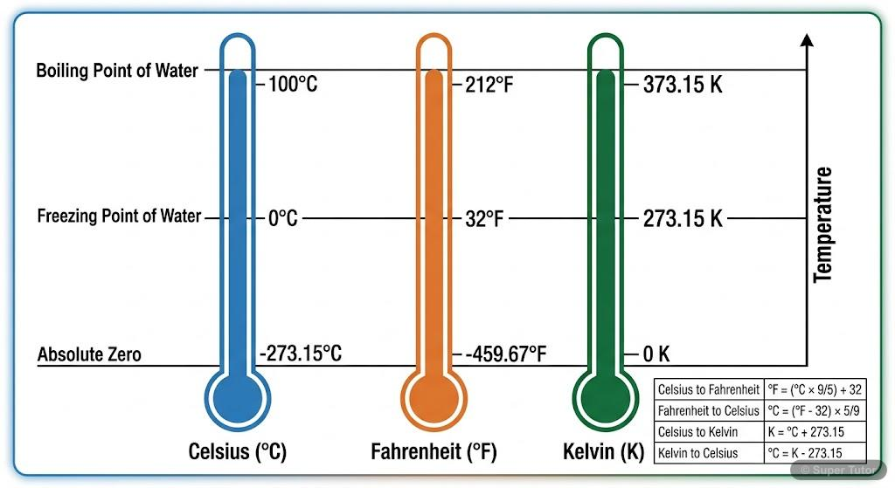
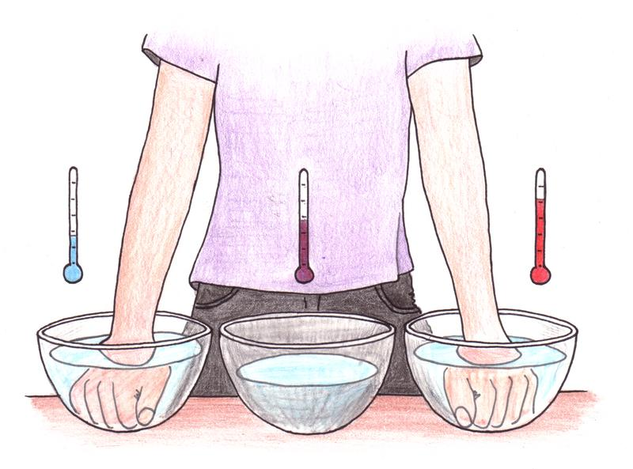
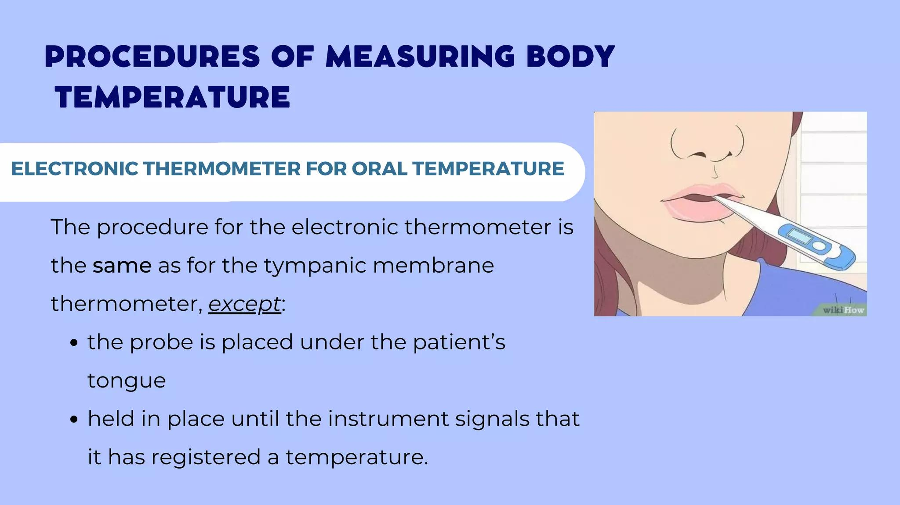
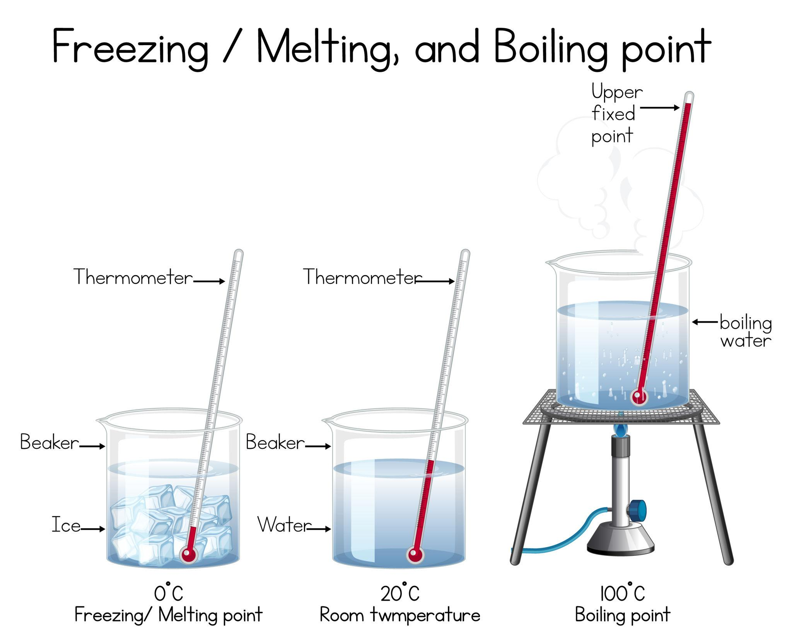

📘 Chapter 07: Temperature and Its Measurement – Questions and Answers
1. Choose the Correct Answer
Question 1. Which of the following is a measure of the degree of hotness or coldness of a body?
- Fever
- Temperature
- Thermometer
- Coldness
Answer: (b) Temperature.
Question 2. Which of the following is the standard unit of temperature?
- Celsius
- Fahrenheit
- Kelvin
- Richter
Answer: (c) Kelvin.
Question 3. Which of the following is the normal body temperature of a healthy adult?
- 36°C
- 37°C
- 38°C
- 39°C
Answer: (b) 37°C.
Question 4. Which of the following thermometers is used nowadays to measure body temperature?
- Digital thermometer
- Mercury thermometer
- Laboratory thermometer
- Wall thermometer
Answer: (a) Digital thermometer.
Question 5. Which of the following is used to measure the air temperature?
- Digital thermometer
- Mercury thermometer
- Laboratory thermometer
- Wall thermometer
Answer: (d) Wall thermometer.
2. Write True or False. Also, Rectify the Incorrect Statements.
Question 1. The range of normal body temperature is 35°C to 42°C.
Answer: False. The normal body temperature of a healthy adult is about 37°C. It is generally around 36.5°C to 37.5°C.
Question 2. Degree Celsius is the SI unit of temperature.
Answer: False. Kelvin (K) is the SI unit of temperature.
Question 3. A clinical thermometer is used to measure the temperature of a solution.
Answer: False. A laboratory thermometer is used to measure the temperature of a solution.
Question 4. You should always wipe the bulb of the thermometer using antiseptic before and after taking the body temperature.
Answer: True.
Question 5. You should always be careful while handling the mercury thermometer.
Answer: True. Mercury is poisonous, so a mercury thermometer must be handled carefully.
3. Match the Columns
| Column A | Column B | Correct Match |
|---|---|---|
| 1. 100°C | (c) Boiling point of water | 1 – (c) |
| 2. Kelvin | (d) SI unit of temperature | 2 – (d) |
| 3. Temperature | (a) Degree of hotness and coldness | 3 – (a) |
| 4. Fahrenheit scale | (e) Proposed by Daniel Gabriel Fahrenheit | 4 – (e) |
| 5. Wall thermometer | (b) Measures air temperature | 5 – (b) |
4. Differentiate Between the Following
Question 1. Differentiate between Celsius and Kelvin scales.
| Celsius Scale | Kelvin Scale |
|---|---|
| Its unit is degree Celsius (°C). | Its unit is Kelvin (K). |
| Water freezes at 0°C. | Water freezes at about 273 K. |
| Water boils at 100°C. | Water boils at about 373 K. |
| It is commonly used in daily life. | It is the SI scale of temperature. |
Question 2. Differentiate between mercury thermometer and digital thermometer.
| Mercury Thermometer | Digital Thermometer |
|---|---|
| It contains mercury in a glass tube. | It uses an electronic sensor. |
| It shows temperature using a mercury column. | It shows temperature on a digital screen. |
| It can break easily. | It is generally more durable. |
| Mercury is poisonous. | It does not contain mercury. |
| It requires careful handling. | It is easy and safer to use. |
Question 3. Differentiate between laboratory thermometer and wall thermometer.
| Laboratory Thermometer | Wall Thermometer |
|---|---|
| It is used to measure the temperature of liquids and other substances during experiments. | It is used to measure the temperature of the surrounding air. |
| It is commonly used in laboratories. | It is commonly placed on walls. |
| It is used for scientific experiments. | It helps us know the room or air temperature. |
5. Solve the Following Numericals
Question 1. Convert 75°C to the SI unit of temperature.
Answer:
Formula:
K = °C + 273
K = 75 + 273
Therefore, 75°C = 348 K.
Question 2. Convert 100 K to °C.
Answer:
Formula:
°C = K − 273
°C = 100 − 273
Therefore, 100 K = −173°C.
Question 3. Convert 30°C to °F.
Answer:
Formula:
°F = (9/5 × °C) + 32
°F = (9/5 × 30) + 32
°F = 54 + 32
Therefore, 30°C = 86°F.
Question 4. Convert 92°F to °C.
Answer:
Formula:
°C = 5/9 × (°F − 32)
°C = 5/9 × (92 − 32)
°C = 5/9 × 60
Therefore, 92°F = 33.3°C (approximately).
Question 5. Convert 100°F to K.
Answer:
Step 1: Convert Fahrenheit into Celsius.
°C = 5/9 × (°F − 32)
°C = 5/9 × (100 − 32)
°C = 5/9 × 68
°C = 37.8°C (approximately)
Step 2: Convert Celsius into Kelvin.
K = °C + 273
K = 37.8 + 273
Therefore, 100°F = 310.8 K (approximately).
6. Define the Following Terms
Question 1. What is temperature?
Answer: Temperature is the measure of the degree of hotness or coldness of a body.
Question 2. What is a thermometer?
Answer: A thermometer is an instrument used to measure temperature.
Question 3. What is the Kelvin scale?
Answer: The Kelvin scale is a temperature scale in which temperature is measured in Kelvin (K). It is the SI scale of temperature.
Question 4. What is a laboratory thermometer?
Answer: A laboratory thermometer is an instrument used to measure the temperature of liquids and other substances during scientific experiments.
Question 5. What is air temperature?
Answer: Air temperature is the measure of how hot or cold the surrounding air is.
7. Answer the Following Questions Briefly
Question 1. What is a thermometer and why is it used?
Answer: A thermometer is an instrument used to measure temperature. It helps us know how hot or cold a body or substance is.
Question 2. What are the reasons that digital thermometers are preferred in comparison to mercury thermometers?
Answer: Digital thermometers are preferred because:
- They are easy to use.
- They show temperature on a digital screen.
- They give quick readings.
- They do not contain poisonous mercury.
- They are generally safer to handle.
Question 3. Name the scales used to measure body temperature.
Answer: The commonly used temperature scales are:
- Celsius scale (°C)
- Fahrenheit scale (°F)
- Kelvin scale (K)
Question 4. Give a brief account of air temperature.
Answer: Air temperature tells us how hot or cold the surrounding air is. It changes during the day and from season to season. It is measured with the help of a wall thermometer or an air-temperature thermometer. It is commonly expressed in degrees Celsius.
Question 5. What precautions should be taken while handling the clinical and laboratory thermometers?
Answer: The following precautions should be taken:
- Handle the thermometer carefully.
- Do not drop or hit it.
- Clean the thermometer before and after use.
- Do not hold the thermometer by its bulb.
- Read the temperature carefully.
- Keep the thermometer away from fire and excessive heat.
- If a mercury thermometer breaks, do not touch or collect the mercury with bare hands. Inform an adult.
8. Answer the Following Questions in Detail
Question 1. Differentiate between the Celsius, Fahrenheit and Kelvin scales.
Answer: Celsius, Fahrenheit and Kelvin are three temperature scales used to measure how hot or cold a body is.
| Property | Celsius Scale | Fahrenheit Scale | Kelvin Scale |
|---|---|---|---|
| Symbol | °C | °F | K |
| Freezing point of water | 0°C | 32°F | 273 K |
| Boiling point of water | 100°C | 212°F | 373 K |
| Common use | Daily life and science | Body temperature and weather in some countries | Scientific measurements |
| SI unit | No | No | Yes |
Conversion Formulas:
- Celsius to Fahrenheit: °F = (9/5 × °C) + 32
- Fahrenheit to Celsius: °C = 5/9 × (°F − 32)
- Celsius to Kelvin: K = °C + 273
- Kelvin to Celsius: °C = K − 273

Question 2. Explain the degree of hotness and coldness with the help of an experiment.
Answer: We can understand the degree of hotness and coldness with a simple experiment.
Materials Required:
- Three bowls
- Cold water
- Warm water
- Lukewarm water
Procedure:
- Take three bowls and label them A, B and C.
- Fill bowl A with cold water.
- Fill bowl B with warm water.
- Fill bowl C with lukewarm water.
- Put your left hand in bowl A and your right hand in bowl B for about one minute.
- Now put both hands together into bowl C.
Observation:
- The water in bowl C feels warm to the left hand.
- The same water feels cool to the right hand.
Conclusion: Our sense of touch may not always tell us the correct temperature. Therefore, we should use a thermometer to measure temperature accurately.

Question 3. What are the steps followed to take the temperature using a digital thermometer?
Answer: We can measure body temperature using a digital thermometer by following these steps:
- Wash your hands properly.
- Clean the tip of the digital thermometer.
- Switch on the thermometer.
- Place the tip under the tongue or in the armpit, according to the manufacturer's instructions.
- Keep it in the correct position.
- Wait until the thermometer gives a beep sound.
- Remove the thermometer and read the temperature on the display.
- Switch off and clean the thermometer after use.
Conclusion: A digital thermometer gives a quick and easy reading of body temperature.

Question 4. Which thermometer is used to measure the temperature of ice and boiling water? Explain with steps.
Answer: A laboratory thermometer is used to measure the temperature of ice and boiling water.
Materials Required:
- Laboratory thermometer
- Crushed ice
- Water
- Beaker
- Heat source
A. Measuring the Temperature of Ice
- Take some crushed ice in a beaker.
- Place the bulb of the laboratory thermometer in the ice.
- Make sure the bulb does not touch the sides or bottom of the beaker.
- Wait until the reading becomes steady.
- Read the temperature carefully.
Observation: The temperature of pure melting ice is about 0°C.
B. Measuring the Temperature of Boiling Water
- Take water in a beaker.
- Heat the water until it starts boiling.
- Place the bulb of the laboratory thermometer in the boiling water.
- Make sure the bulb does not touch the sides or bottom of the beaker.
- Wait until the reading becomes steady.
- Read the temperature while the bulb is still in the water.
Observation: The boiling point of pure water is about 100°C at normal atmospheric pressure.
Conclusion: A laboratory thermometer can be used to measure the temperature of ice and boiling water. Handle hot water and laboratory equipment carefully.

Question 5. How was temperature measured before the discovery of the thermometer? Is it reliable or not? Explain.
Answer: Before the discovery of the thermometer, people used their sense of touch to find out whether something was hot or cold.
For example:
- People touched water to judge whether it was hot or cold.
- They used their hands to compare the temperatures of different objects.
- They depended on their feelings to judge temperature.
Is this method reliable?
No, this method is not reliable because our sense of touch can sometimes give us a wrong idea about temperature.
For example, in the three-bowl experiment, the same lukewarm water feels warm to one hand and cool to the other.
Conclusion: The sense of touch cannot measure temperature accurately. A thermometer is needed to get a correct measurement.
9. Quick Revision – Important Points
- Temperature measures the degree of hotness or coldness of a body.
- A thermometer is used to measure temperature.
- Kelvin (K) is the SI unit of temperature.
- The normal body temperature of a healthy adult is about 37°C.
- Digital thermometers are commonly used to measure body temperature.
- A laboratory thermometer is used in scientific experiments.
- A wall thermometer can be used to measure air temperature.
- Water freezes at 0°C and boils at 100°C under normal atmospheric pressure.
- The Fahrenheit freezing point of water is 32°F.
- The Fahrenheit boiling point of water is 212°F.
- The Kelvin freezing point of water is about 273 K.
- The Kelvin boiling point of water is about 373 K.
- Our sense of touch cannot measure temperature accurately.
- Mercury is poisonous, so mercury thermometers must be handled carefully.
- A digital thermometer gives a quick temperature reading.
10. Chapter Summary
Temperature is the measure of how hot or cold a body is. A thermometer is used to measure temperature. Kelvin is the SI unit of temperature. Celsius, Fahrenheit and Kelvin are three commonly known temperature scales. Digital thermometers are commonly used to measure body temperature. Laboratory thermometers are used in experiments, while wall thermometers can measure air temperature. Our sense of touch cannot give an accurate measurement of temperature. Therefore, we should use a suitable thermometer.
Message of the Chapter
Temperature helps us understand how hot or cold things are. Always use a suitable thermometer and handle it carefully to get an accurate reading.
MCQ Quiz
अध्याय के वस्तुनिष्ठ प्रश्नों का अभ्यास करें।
MCQ Quiz शुरू करेंPDF Notes
इस अध्याय के नोट्स PDF में पढ़ें या डाउनलोड करें।
📄 View PDF ⬇️ Download PDF